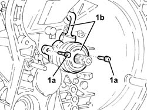

1820B38 CLUTCH HYDRAULIC ACTUATOR/OPERATING CYLINDER - R.R. AND BLEED AIR WITH CLUTCH REMOVED
- Path
- Procedures > 18 CLUTCH UNIT > 1820 CLUTCH RELEASE CONTROLS > 1820B HYDRAULIC CLUTCH SYSTEM > 1820B38 CLUTCH HYDRAULIC ACTUATOR/OPERATING CYLINDER - R.R. AND BLEED AIR WITH CLUTCH REMOVED
- Kind
- repair procedure (removal / refitting; the operation number is the code)
- Applies to
- engines: 2.0 JTS; all production periods
- Interactive page
- https://sloeber94.github.io/elrnDB-aGt/en/#/125001226
Applies to: engines: 2.0 JTS; all production periods
 Removing
Removing
 Refitting
Refitting1. If necessary, undo the bolts (1a) and remove clutch hydraulic actuator (1b).

Applies to: engines: 2.0 JTS; all production periods
Refitting
RemovingClean the mating surfaces between the clutch hydraulic actuator and the gearbox of sealant residues.
Apply silicon sealant to the matching surfaces of the hydraulic clutch actuator and the gearbox.
Place the hydraulic clutch actuator in position and secure it tightening the bolts to the recommended torque.
Fastening | Component | Ø | Value (daNm) | |
|---|---|---|---|---|
- | - | - | - | - |